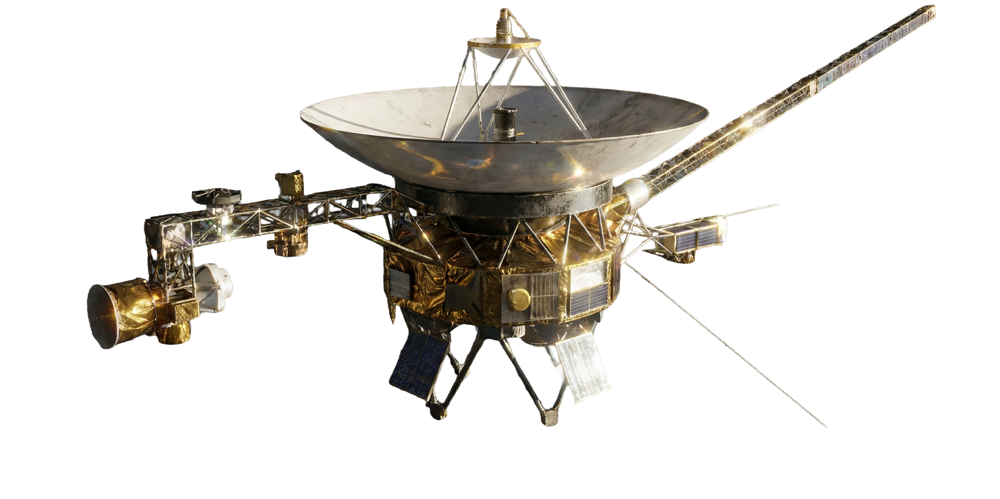

PJLK to innowacyjna organizacja, której misją jest otwieranie nowych horyzontów w eksploracji kosmosu. Łączymy najnowsze osiągnięcia technologii z pasją odkrywania, aby umożliwić ludziom doświadczenie przestrzeni kosmicznej w sposób bezpieczny, inspirujący i niezapomniany. Nasze projekty obejmują zarówno loty orbitalne, jak i międzyplanetarne wyprawy, które pozwalają uczestnikom zobaczyć Ziemię z perspektywy kosmosu, doświadczyć warunków mikrograwitacji oraz wziąć udział w eksperymentach naukowych. Każda misja jest starannie zaplanowana, tak aby łączyć edukację, przygodę i wyjątkowe przeżycia. Dzięki zespołowi ekspertów, innowacyjnym rozwiązaniom technologicznym oraz dbałości o każdy szczegół, PJLK staje się pionierem w docieraniu do najdalszych zakątków Wszechświata. Naszym celem jest nie tylko podróż, ale także inspirowanie kolejnych pokoleń do patrzenia w gwiazdy i przekraczania granic ludzkich możliwości.
75-LECIE VOYAGERA
